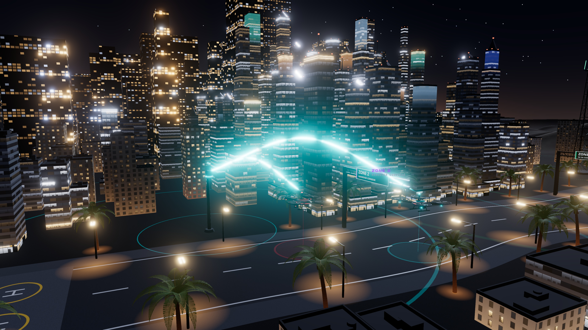
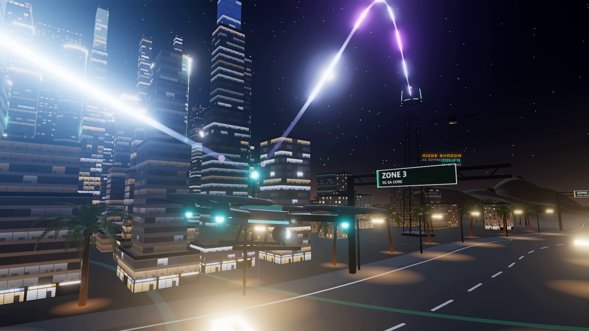
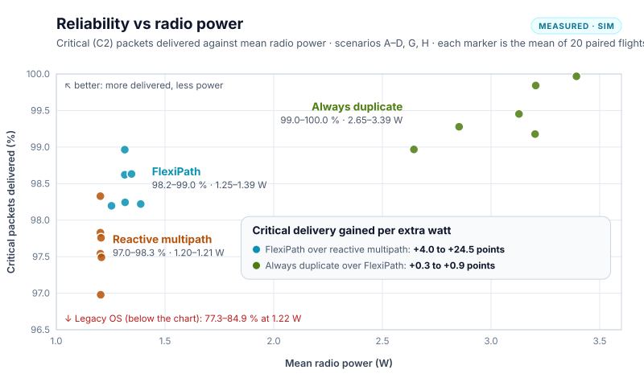
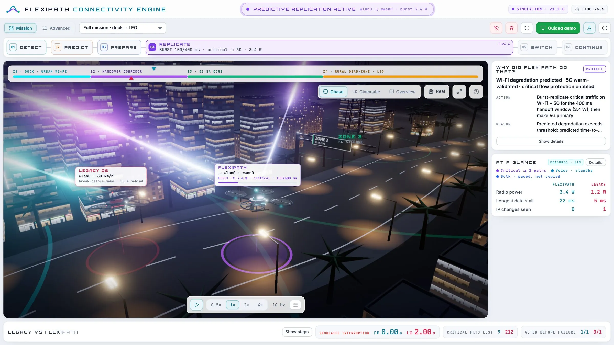

A drone beyond its pilot's sight. If its command link is silent for 300 ms, it must stop and hover.
Networks fail without warning, and today's devices switch only after the old link is gone. In our model, that leaves a legacy stack silent for 3.8 seconds. A drone whose control link is silent for 300 ms must stop and hover, so every handover becomes a risk.
FlexiPath predicts the failure. It watches every link ten times a second, wakes the next radio and tests it, copies only the critical commands over both networks for 0.4 seconds, then switches with no gap. A fixed anchor relay keeps every session open, so the ground station always sees one address. Spare radios sleep to save power.
We built a digital twin where two identical drones fly one mission through Wi-Fi, 5G and satellite coverage, under the same radio conditions: one runs FlexiPath, the other a legacy stack.
Every 100 ms the engine measures signal, loss, delay and jitter. It fits a 3-second trend and estimates the time to failure, when loss would reach 15 %. A coverage map of earlier flights warns 8 seconds before a known dead zone. It then wakes the best spare modem (1.2 W to 1.8 W) and checks it with 64-byte heartbeats. Critical traffic is duplicated for a 400 ms burst (3.4 W); voice joins only if its loss exceeds budget, and bulk uploads are never copied. The receiver keeps the first copy of each packet and drops the late one. All sessions ride a UDP tunnel to an anchor relay, so addresses never change. Without warning, failover takes 160 ms in our model. Every decision is logged with the values behind it.


